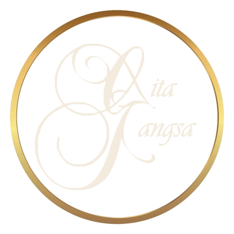

Majlis Perkahwinan
Perarakan pengantin yang gemilang, ketibaan penuh adat dan suasana resepsi yang berseri.
CadanganKompang · Tarian · Muzik Asli


Traditional Performing Arts & Cultural Entertainment
“Menghidupkan Warisan, Menyemarakkan Persembahan.”
Gita Gangsa merupakan sebuah kumpulan seni persembahan tradisional yang ditubuhkan pada tahun 2011 dan berpangkalan di Kajang, Selangor. Kumpulan ini menghimpunkan golongan belia daripada pelbagai latar belakang yang dipertautkan oleh satu minat yang sama — kecintaan terhadap seni warisan Malaysia.
Bermula dengan persembahan Gamelan Melayu, Gita Gangsa terus berkembang dengan memperluaskan cabang seni persembahannya kepada tarian tradisional, caklempong, muzik asli, ghazal dan kompang. Kepelbagaian ini membolehkan Gita Gangsa menawarkan persembahan yang lengkap — daripada alunan gangsa yang anggun hingga paluan kompang yang gemilang — untuk pelbagai jenis majlis dan acara.
Setiap persembahan digerakkan oleh satu hasrat: memperkenalkan, memelihara dan memartabatkan seni persembahan tradisional Malaysia. Bagi Gita Gangsa, warisan bukan sekadar untuk dikenang, tetapi untuk dipersembahkan dengan penuh penghayatan, kualiti dan rasa hormat kepada khalayak masa kini.

Warisan bukan sekadar untuk dikenang — tetapi untuk dipersembahkan.
Gita lagu, nyanyian
Gangsa logam yang melahirkan suara gamelan
Daripada sebuah kumpulan Gamelan Melayu, Gita Gangsa kini menghimpunkan enam cabang seni persembahan tradisional di bawah satu nama.
Gita Gangsa ditubuhkan di Kajang, Selangor, bermula dengan persembahan Gamelan Melayu.
Seni persembahan diperluas kepada tarian tradisional, caklempong, muzik asli, ghazal dan kompang.
Persembahan individu atau gabungan untuk majlis perkahwinan, korporat, rasmi dan kebudayaan.
Terus memperkenalkan, memelihara dan memartabatkan seni persembahan tradisional Malaysia.
Cadangan — untuk semakan dan pengesahan pihak Gita Gangsa
Visi
Menjadi kumpulan seni persembahan tradisional pilihan yang memartabatkan warisan seni Malaysia melalui persembahan yang berkualiti, berjiwa dan relevan dengan zaman.
Misi

Nilai Teras
Pilih satu persembahan atau gabungkan beberapa cabang seni untuk menghidupkan suasana majlis anda.

Keanggunan bunyi gangsa warisan istana.
Perincian
Paluan gemilang untuk setiap ketibaan.
Perincian
Keindahan gerak, busana dan budaya.
Perincian
Melodi terang yang menceriakan suasana.
Perincian
Melodi mendayu berjiwa Melayu.
Perincian
Puisi dan lagu yang romantis dan beradab.
PerincianKeanggunan bunyi gangsa warisan istana


Gamelan Melayu ialah ensembel muzik tradisional yang terkenal dengan alunan bunyi gangsa yang lembut, berlapis dan penuh keanggunan.
Berakar daripada tradisi muzik istana Melayu, gamelan lazimnya menggabungkan alat-alat seperti gong, kenong, saron, gambang dan gendang yang dimainkan secara serentak bagi menghasilkan harmoni yang tenang dan berwibawa. Gamelan juga merupakan titik permulaan perjalanan Gita Gangsa sejak 2011. Keanggunan bunyinya menjadikan gamelan pilihan tepat untuk majlis rasmi, acara korporat dan majlis istimewa yang menuntut suasana tertib dan bermakna.


Paluan gemilang untuk setiap ketibaan
Kompang ialah alat muzik perkusi tradisional yang sinonim dengan sambutan dan keraian dalam masyarakat Melayu.
Dimainkan secara berkumpulan, paluan kompang yang serentak dan saling bertingkah menghasilkan irama yang meriah, bersemangat dan penuh penghormatan. Sejak sekian lama, kompang mengiringi detik-detik penting — daripada perarakan pengantin hingga ketibaan tetamu kehormat. Gita Gangsa membawakan seni paluan kompang dengan tertib dan bertenaga, menjadikan setiap ketibaan satu detik yang dikenang.
Bilangan pemalu kompang disesuaikan mengikut skala majlis.
Keindahan gerak, busana dan budaya


Tarian tradisional Malaysia menghimpunkan keindahan gerak, muzik dan busana dalam satu persembahan yang memukau.
Setiap gerak tari membawa kehalusan budi, adab dan cerita masyarakatnya — dipersembahkan dengan lenggok yang tertib serta kostum tradisional yang menyerlahkan keindahan tekstil warisan. Tarian tradisional sesuai dijadikan persembahan pembukaan, sambutan ketibaan atau acara kemuncak, sama ada secara bersendirian atau digabungkan bersama iringan muzik tradisional.


Melodi terang yang menceriakan suasana
Caklempong ialah alat muzik tradisional berupa set gong kecil yang menghasilkan melodi bernada terang, ceria dan mudah memikat telinga.
Berakar daripada tradisi Minangkabau dan sinonim dengan Negeri Sembilan, caklempong dimainkan secara berensembel dengan irama yang rancak dan bersemangat. Bunyinya yang jernih menjadikan caklempong sesuai untuk menghidupkan suasana — sama ada sebagai persembahan pentas, muzik sambutan ketibaan tetamu atau iringan suasana sepanjang majlis.
Format dan tempoh persembahan mengikut persetujuan bersama.
Melodi mendayu berjiwa Melayu


Muzik asli merupakan khazanah muzik tradisional Melayu yang sarat dengan kehalusan rasa dan jiwa.
Dengan melodi yang mendayu dan irama yang tersusun indah, muzik asli lazimnya menampilkan alat seperti biola, akordion, gendang dan rebana, sama ada dipersembahkan secara instrumental atau bersama penyanyi. Lagu-lagu asli membawa nostalgia dan keindahan bahasa Melayu, menjadikannya pilihan yang elegan untuk majlis makan malam, majlis rasmi dan acara kebudayaan.


Puisi dan lagu yang romantis dan beradab
Ghazal Melayu ialah gabungan puisi, lagu dan muzik yang romantis, berjiwa dan penuh kehalusan.
Sinonim dengan negeri Johor, ghazal lazimnya diiringi alat muzik seperti harmonium, tabla, gambus, biola dan gitar, dengan lirik yang puitis serta lenggok vokal yang mengasyikkan. Suasananya yang intim dan elegan menjadikan ghazal pilihan istimewa untuk majlis makan malam, majlis rasmi dan acara kebudayaan yang mahukan sentuhan seni yang halus dan beradab.
Susunan pemuzik dan repertoir dibincangkan mengikut majlis.
Daripada perarakan pengantin hingga majlis rasmi negara, setiap persembahan dirancang mengikut suasana dan objektif acara anda.
Perarakan pengantin yang gemilang, ketibaan penuh adat dan suasana resepsi yang berseri.
CadanganKompang · Tarian · Muzik Asli

Sentuhan budaya yang memberi identiti dan keanggunan kepada acara syarikat.
CadanganGamelan · Tarian · Caklempong

Persembahan yang tertib dan beradab untuk acara kementerian, jabatan dan agensi.
CadanganKompang · Gamelan · Tarian

Muzik suasana yang elegan dan persembahan pentas yang memukau tetamu.
CadanganGhazal · Muzik Asli · Gamelan

Detik pelancaran yang lebih berkesan dengan sentuhan seni warisan.
CadanganGamelan · Tarian · Kompang

Pembukaan persidangan dan sesi rehat yang lebih bermakna dan berbudaya.
CadanganGamelan · Caklempong · Muzik Asli

Iringan ketibaan tetamu kehormat dan istiadat dengan penuh penghormatan.
CadanganKompang · Gamelan

Persembahan yang menyerlahkan kekayaan seni dan budaya Malaysia.
CadanganSemua cabang seni

Persembahan pentas yang bertenaga untuk khalayak festival.
CadanganGamelan · Caklempong · Tarian

Memperkenalkan seni tradisional kepada pelajar melalui persembahan yang menarik.
CadanganGamelan · Kompang · Tarian

Semangat patriotik dalam irama dan gerak tari warisan.
CadanganKompang · Caklempong · Tarian

Pengalaman budaya yang berkesan untuk tetamu hotel, resort dan pelancong.
CadanganGamelan · Muzik Asli · Tarian
Pakej A
Satu cabang seni persembahan, dipilih mengikut kesesuaian acara.
Pakej B
Dua atau lebih jenis persembahan dalam satu acara.
Pakej C
Pengalaman acara yang lebih meriah dan menyeluruh.
“Setiap pakej persembahan Gita Gangsa boleh disesuaikan mengikut konsep, lokasi, tempoh dan keperluan majlis.”
Hubungi kami untuk mendapatkan cadangan pakej dan sebut harga berdasarkan keperluan majlis anda.


Klik pada mana-mana gambar untuk paparan lebih besar.
Lebih sedekad berkarya dalam seni persembahan tradisional, bermula dengan Gamelan Melayu.
Enam cabang seni di bawah satu nama — Gamelan Melayu, kompang, tarian tradisional, caklempong, muzik asli dan ghazal.
Dianggotai golongan belia daripada pelbagai latar belakang yang membawa semangat baharu kepada seni warisan.
Pilih satu persembahan atau gabungkan beberapa cabang seni — semuanya diselaraskan bersama satu pasukan.
Format, tempoh, bilangan anggota dan repertoir disesuaikan dengan konsep, lokasi dan keperluan majlis.
Setiap persembahan dibawakan dengan rasa hormat dan penghayatan terhadap seni dan budaya Malaysia.

Proses tempahan yang ringkas, jelas dan teratur — daripada pertanyaan pertama hingga tempahan disahkan.
Pelanggan menghubungi Gita Gangsa dan berkongsi maklumat majlis.
Perbincangan mengenai jenis persembahan, lokasi, tarikh dan keperluan acara.
Gita Gangsa menyediakan cadangan persembahan yang bersesuaian.
Sebut harga disediakan berdasarkan keperluan sebenar majlis.
Butiran persembahan dan tempahan dimuktamadkan bersama pelanggan.
Sedia untuk bertanya?


Daripada majlis perkahwinan hingga acara korporat dan rasmi, Gita Gangsa bersedia membantu menjadikan acara anda lebih bermakna dengan sentuhan seni dan warisan budaya Malaysia.
Gita Gangsa
Traditional Performing Arts & Cultural Entertainment
“Menghidupkan Warisan, Menyemarakkan Persembahan.”

Gamelan Melayu · Kompang · Tarian Tradisional · Caklempong · Muzik Asli · Ghazal